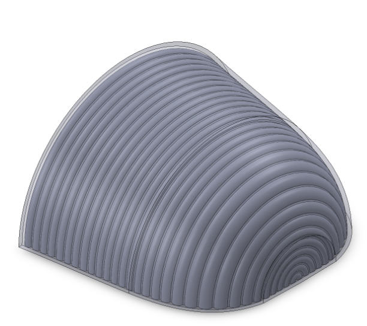
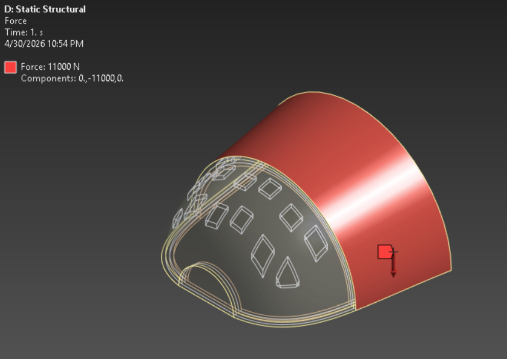

FIG.00 / 127 / hero2024
ME127 — Composites
Designed and evaluated a lightweight composite alternative to traditional steel-toe footwear using 3D-printed materials and sandwich structures. The goal was to reduce weight while maintaining the structural performance required to withstand a 2,500 lbf compressive load under ASTM F2413-18. We developed and compared multiple material and geometric configurations using CAD and finite element analysis to understand how material selection and internal structure affected strength, deformation, and weight.
We designed three internal core geometries: solid, honeycomb, and corrugated, along with a square lattice design. These geometries were selected to investigate how internal structure could reduce material usage while maintaining stiffness and load distribution. For the 3D-printed designs, we used PA-CF as the primary structural core with either TPU 95A or TPE as the outer layers. TPU 95A was selected for its ductility and ability to absorb impact, while PA-CF provided higher stiffness and strength for the load-bearing structure. We also modeled traditional carbon fiber and aluminum honeycomb sandwich layups as a baseline for comparison.
The composite layups were evaluated with different fiber orientations and core thicknesses to understand their effect on structural performance. For the traditional composite designs, we used ANSYS ACP to define carbon fiber ply orientations around an aluminum honeycomb core and compared different laminate configurations and thicknesses.


We used ANSYS Mechanical to perform static structural FEA on each design. The simulations were based on the ASTM F2413-18 compression requirement, applying a 2,500 lbf load uniformly across the top surface of the toe cap while constraining the bottom surface to represent contact with the ground. For the composite layups, ANSYS ACP was used to define material orientations, ply stacking, and the aluminum honeycomb core.
We compared each design using total factor of safety, internal factor of safety, and maximum deformation. After identifying the strongest 3D-printed configuration, we also tested the design under angled loading conditions at 20°, 45°, and 70° to investigate how the toe cap performed under more realistic impact scenarios.


The TPU 95A and PA-CF configurations consistently outperformed the TPE-based designs in internal factor of safety. The corrugated TPU 95A-PA-CF-TPU 95A configuration achieved the highest internal factor of safety among the 3D-printed designs at 4.39, while the traditional composite layups provided the strongest overall structural performance. The selected corrugated design also maintained an internal factor of safety between 2.5 and 7.92 across the angled loading cases.
Beyond structural performance, the D3 design reduced mass from approximately 871 g for the equivalent steel design to 133 g, while reducing material cost from approximately $64.80 to $6.47. Although the 3D-printed designs did not match the overall factor of safety of the traditional composite layups, the results demonstrated the potential of combining ductile outer materials with a stiff PA-CF core to create significantly lighter protective structures.